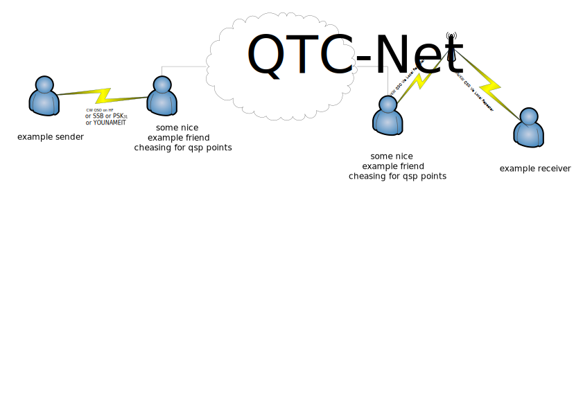

QTC-Net
A Short Telegram System for Amateur Radio
This ugly graphic trys to illustrate the network, it is somewhat ugly and too complicated,
and will be exchanged soon, but we have really trouble to explain QTC Net in two
scentences.
The net is basically a decentralized drop off point for short telegrams from one operator
to another operator. The Messages are all public as it is for Amateur Radio Service. The
Transfer from one endpoint station to the Network or the other way round will mostly be
done manually, by having a friendly operator (who may chease some delivery points for
a diplome) in the middle who has access to the Network.
The easiest way to access the network ist via Internet, but anyway the messages and
Interserver communications are designed to be transmitted via Radio Links as well,
if there is enough bandwidth.

Frequently Asked Questions:
The FAQ is here.
Development:
The Development will take place on GIT-HUB
Protocol:
A Brief description of the Protocol Protocol this is derived from
the heavily brainstormed draft that contains every note we did.
QTC-Net Message Format:
A Brief description of the message format
Contact:
As long as the net is not working, you can use our Mail which is
- Hans: zem at fnordpol.de aka OE1SRC
- Stefan: may at fnordpol.de aka OE1GIS
regards
Hans and Stefan